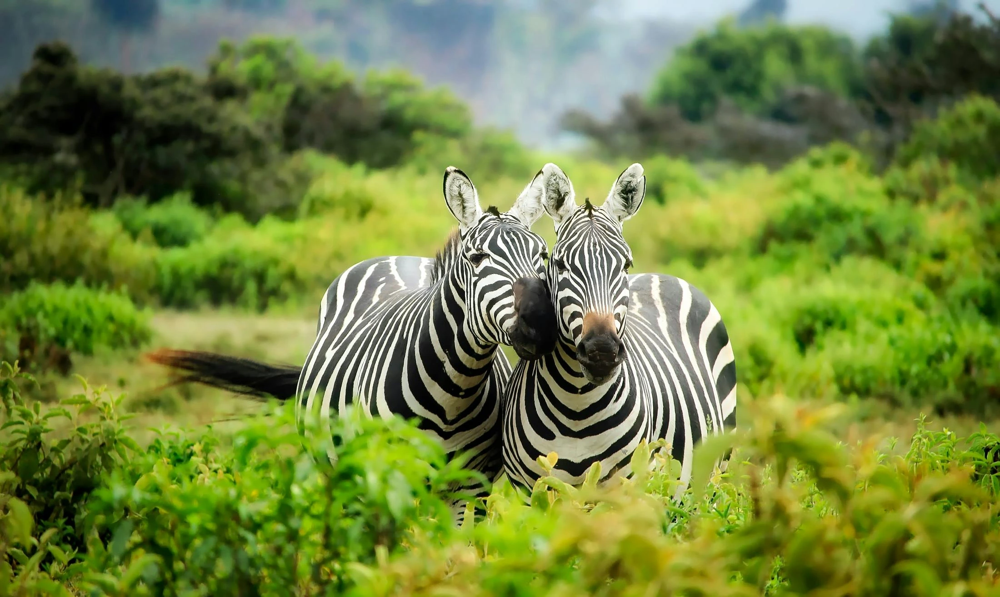
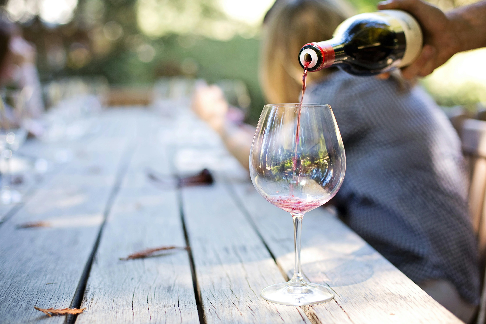
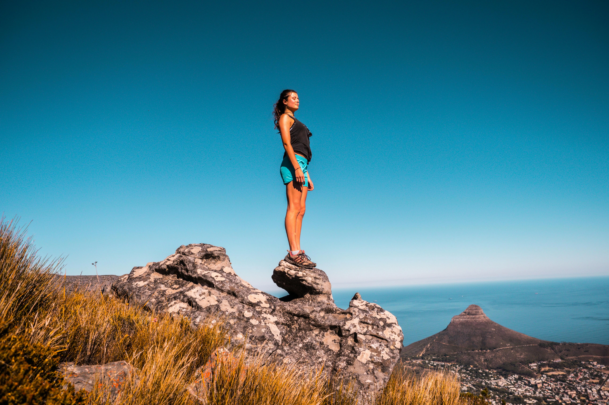
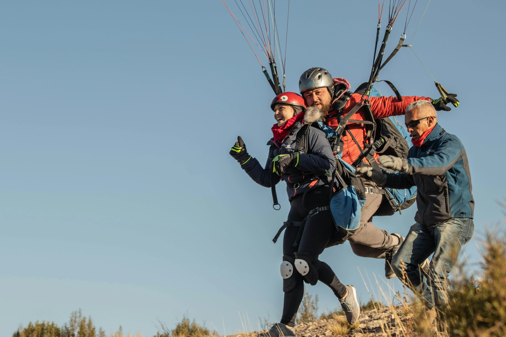
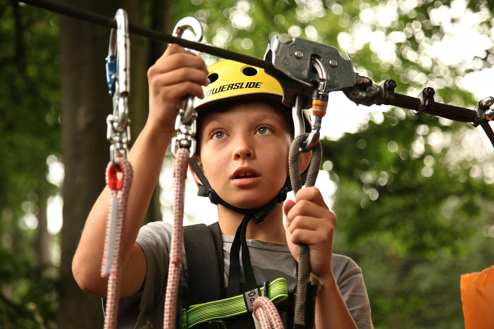

Explore Fun Activities
South Africa is home to many fun activites from safaris, hiking and even ziplining!

Pilanesberg National Park Safari
You don't have to travel all the way to Kruger for the chance of seeing the Big Five (buffalo, elephant, lion, rhino, and leopard). Near Sun City, Pilanesberg National Park offers the classic day safari experience, complete with open 4x4s and safari guides—and air-conditioned transfers from Johannesburg.

Wine Tour to Stellenbosch & Franschoek
Save hours reading reviews and researching local wineries, and opt for this hassle-free guided wine tour instead. Spend a full day traveling between some of the area's best wine estates, with stops at Stellenbosch, Franschhoek, and Paarl.

Lion's Head Sunrise/Sunset Hike
Lion's Head—located in Table Mountain National Park—is known for being a top hiking location that offers incredible views of the Atlantic Ocean and the Hottentots Holland Mountains. With this guided hike, you can safely explore this magnificent landscape without the worry of getting lost.

Tandem paragliding
Cape Town is a spectacular destination for paragliding, with Table Mountain, Lion's Head, Robben Island, and dramatic coastline to see from above. This tandem experience puts you in the glider with an experienced instructor, who'll show you the sights, let you take a turn at flying if you wish, and bring you safely into land.

Zipline from Table Mountain Reserve
This ziplining experience allows you to see incredible views of Cape Town's most famous natural wonder—Table Mountain, and enjoy a thrill-seeking activity at the same. Travel in a private 4x4 vehicle to the foot of the mountain, then, start a zipline tour with seven different cables to try out.